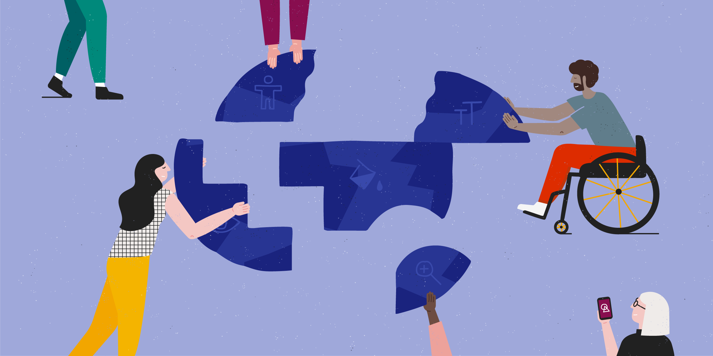

Just like in many other categories in life, to make a certain avenue accesible by as many people as possible is a crucial attitude to have as a creator. Websites is also a one of them. It is easy to look over the fact that a lot of people with various impairments can have difficulties in accessing the information you are providing from your websites. To be conscious of this issue and to try to fix this for many people as possible is the key point of accessibility.
To learn more about the Definition of Accessibility... 
1. People with visual impairments
There are people who have difficulties in reading, when the letters are too small or when the colours of letters and background are similar.To include this people in target audience of the website you are making, we need to put more thoughts and care in making the contents more visible and clear.
2. People with mobility impairments
Some people have troubles operating devices because of their mobility impairments. This for example includes people with paralysis in their body or having a hard time moving the mouse to click on things they want to see. In this case, one of the solution is to make the keyboard control easier as an alternative method.
3. People with cognitive impairments
This usually refers to people who have hard time remembering or understanding the content of the pages, in results of aging or mental illnesses. To help this group of people, you can try to create the webpage with less complicated layouts and more intuitive and consistent navigation.